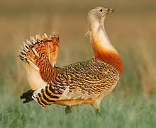

La avutarda común es un ave de gran tamaño con patas y cuello largos y un voluminoso cuerpo en forma de barril, adaptada a la forma de vida
esteparia típica de su familia. Las avutardas comunes son las aves voladoras más pesadas del mundo, junto a la avutarda kori.
Además es una de las especies vivas de aves con un mayor dimorfismo sexual, en términos de tamaño entre machos y hembras.
La única especie conocida con mayor dimorfismo en el tamaño es el pavo real cuelliverde (Pavo muticus) cuyos machos casi cuadriplican el peso
de las hembras.
Hábitat y distribución

Entre las avutardas y el resto de aves vivas su único rival en los registros máximos de peso son las avutardas kori (Ardeotis kori), que son
más altas y largas, aunque con menos dimorfismo sexual, y tienen los tarsos relativamente más largos.
Por detrás la siguiente en peso es la avutarda india (Ardeotis nigriceps) que es ligeramente menos pesada.
Los machos de avutarda común suelen medir entre 90 y 105 cm de alto, con una longitud de alrededor de 115 cm y con una envergadura alar de
2,1 a 2,7 m. El peso de los machos suele oscilar entre los 5,8 y 18 kg.
El peso medio registrado en los machos ha sido bastante variable: en Rusia, los machos pesan de media 9,2 kg, en España los machos suelen
pesar 9,82 kg durante la época de cría y 10,62 kg fuera de ella, en Alemania pesan una media de 11,97 kg, y en Gran Bretaña antes de su extinción
local los machos de avutarda pesaban 13,5 según el Guinness World Records.
En la Región de Murcia podemos verla en las Sierras del Altiplano (La Pila, El Carche, Sierra Larga, Picarcho), en algunas de la Vega Alta
del Segura (Cabeza del Asno y del Puerto), y en las sierras litorales de Cartagena, Mazarrón, Lorca y Águilas (Almenara).
Sus mayores efectivos se encuentran en la Península Ibérica y en el Magreb.
Costumbres y alimentación

La avutarda es omnívora 24 y su dieta varía con las estaciones del año.
En agosto, en el noroeste de España, el 48,4% de la dieta de los adultos se
compone de materia vegetal verde, el 40,9% de invertebrados y el 10,6% de semillas. En la misma población, durante el invierno, las semillas y la materia
vegetal verde conforman casi la totalidad de su dieta.
Al parecer la alfalfa es el alimento preferido de las avutardas en España.
Otras plantas por las
que presentan predilección son las legumbres, las crucíferas, el diente de león, las uvas y los granos de trigo y cebada.
Entre sus presas animales, destacan
los insectos, que son el principal alimento de las jóvenes avutardas durante su primer verano, aunque cambian a la dieta herbívora estacional de los adultos en
invierno.
Los coleópteros (como los escarabajos), los himenópteros (como abejas, avispas y hormigas) y los ortópteros (como grillos, saltamontes y langostas)
son los insectos más consumidos, dependiendo principalmente de la abundancia y disponibilidad de cada uno de ellos.
También pueden consumir pequeños
vertebrados, como pequeños roedores, ranas, lagartijas y polluelos de otras aves, como su suplemento cuando surge la oportunidad.
El consumo de uvas, aceitunas, tomatito del diablo Solanum nigrum, etc. no ha sido identificado correctamente como frugívoro hasta fechas recientes.
La avutarda común consume escarabajos meloidos del género Meloe posiblemente por el efecto contra los patógenos que tiene la cantarina
(sustancia tóxica producida por el escarabajo), así como por una posible función estimulante para incrementar la libido de los machos, o taludes del
propio río, ubicándolos en cuevas o repisas cubiertas, protegidas de las inclemencias del tiempo.
Protección y conservación
Se trata de una especie calificada como especie vulnerable según criterios UICN, debido al declive que han sufrido la mayoría de sus poblaciones
por la pérdida y fragmentación de su hábitat. Los factores principales que han determinado esta reducción han sido la intensificación agrícola,
la extensión de los cultivos de regadío, la construcción de infraestructuras (carreteras, líneas eléctricas, urbanizaciones), la caza y el uso de
pesticidas.
En el pasado su área de distribución fue mucho mayor, ya que se ha extinguido en la mayor parte de Europa durante los siglos XIX
y XX (por ejemplo en las Islas británicas en 1832 y en Rumanía en 1967).
A pesar de la prohibición de su caza desde 1980, en España la avutarda se encuentra amenazada por la degradación y reducción de su hábitat
natural debido a roturaciones de zonas esteparias, conversión a regadío de los secanos, concentración parcelaria, desaparición de linderos,
barbechos y rastrojos, desaparición de mosaicos de cereal, olivar, viñedo y almendral, así como al aumento de la presencia humana, vallado de
fincas, tendidos eléctricos, uso de plaguicidas, furtivismo, etc.
Otras amenazas para su hábitat son la proliferación de infraestructuras
o las molestias derivadas de actividades de ocio (caza o vehículos todo-terreno).
En la actualidad se está desarrollando un programa Life de conservación del águila-azor perdicera en nuestra región por parte de la Consejería de Medio
Ambiente, que contempla numerosas medidas, cuyos resultados son sin duda esperanzadores, y deben permitir la recuperación de esta especie hasta niveles
poblacionales anteriores a su declive.